8 марта, масленица и тотальное каталово
- 8, 9, 10 марта 2008 -
8 Марта. Международный Женский день.
9 марта. Масленица, русский праздник.
10 марта. Просто клево катаемся
Хорошему празднику заранее рады, так что в пятницу вечером немножко собирается компания и немножко отмечаем. Света, Марина, Таня, чуть позже подъехали мои двоюродные брат Саша и сестра Юля, которые пока не катаются на сноубордах, но очень хотят сходить на Мамай.
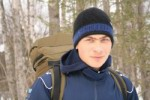
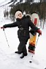
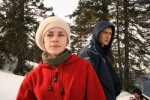
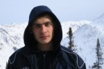
Саша и Юля
 Суббота, 8 марта. Поздравляю с Праздником маму, сестер, любимую женщину и подруг!!! Сегодня в честь праздника носим девушек на руках в гору, откапываем подснежники, готовим праздничный стол, танцуем стриптиз и вообще все пожелания исполняем, ну просто "на ура". Все для вас :) :) :) Ну а сначала скромно пообедали, приняв по писярику (50гр.) настойки "Бурятия", которую видимо настаивают на травах Тункинской долины, потому что реакция была соответствующая - все очень расслабились и начали смеяться по пустякам :) Хорошо, что отпустило и мы все-таки пошли кататься. Саша и Юля прогулялись до Трех Берез, посмотрели на катающихся сноубордистов. А мы посмотрели сверху на лавинное безобразие, которое съехало со всех скал восточного берега Мамая, прямо на все учебные склоны, почти до кунга. Посмотрели да и пошли дальше. А чего, погода хорошая, даже ветер не дует. Три выходных дня, на Мамае собралось такое большое тусилово - возле кунга и пингвинской поляны было много палаток и знакомых лиц. Кулуары с Трех Берез уже раскатали, кто-то отважно пошел на Лесной по лавинным языкам. Ну а мы сегодня забрались выше всех, на Мамай. Нашли прогретые солнцем камни, отдохнули, перекусили, компот из персиков, м-м-м, вкусно :) Теперь надо бояццо и ехать вниз, а как же без этого, за тем и пришли. Место хорошее, можно выбрать, в какой кулуар уехать. Света с новым бипером осторожно едет первая, она любит первая ездить :) А я люблю ее спасать, поэтому еду вторым :) Выкатив в Северный цирк, который в последнее время нравится все больше и больше, ждем остальных участников - Космо, Марина и Таня. Все благополучно спускаются и мы весело едем дальше, потому что по Северному прикольно кататься. Выкатили по левому ручью, в нем еще не катали в этом сезоне, тоже весело и хорошо :) "Блин, ваще клево! Я еще хочу!" (с) Снегурочка
Суббота, 8 марта. Поздравляю с Праздником маму, сестер, любимую женщину и подруг!!! Сегодня в честь праздника носим девушек на руках в гору, откапываем подснежники, готовим праздничный стол, танцуем стриптиз и вообще все пожелания исполняем, ну просто "на ура". Все для вас :) :) :) Ну а сначала скромно пообедали, приняв по писярику (50гр.) настойки "Бурятия", которую видимо настаивают на травах Тункинской долины, потому что реакция была соответствующая - все очень расслабились и начали смеяться по пустякам :) Хорошо, что отпустило и мы все-таки пошли кататься. Саша и Юля прогулялись до Трех Берез, посмотрели на катающихся сноубордистов. А мы посмотрели сверху на лавинное безобразие, которое съехало со всех скал восточного берега Мамая, прямо на все учебные склоны, почти до кунга. Посмотрели да и пошли дальше. А чего, погода хорошая, даже ветер не дует. Три выходных дня, на Мамае собралось такое большое тусилово - возле кунга и пингвинской поляны было много палаток и знакомых лиц. Кулуары с Трех Берез уже раскатали, кто-то отважно пошел на Лесной по лавинным языкам. Ну а мы сегодня забрались выше всех, на Мамай. Нашли прогретые солнцем камни, отдохнули, перекусили, компот из персиков, м-м-м, вкусно :) Теперь надо бояццо и ехать вниз, а как же без этого, за тем и пришли. Место хорошее, можно выбрать, в какой кулуар уехать. Света с новым бипером осторожно едет первая, она любит первая ездить :) А я люблю ее спасать, поэтому еду вторым :) Выкатив в Северный цирк, который в последнее время нравится все больше и больше, ждем остальных участников - Космо, Марина и Таня. Все благополучно спускаются и мы весело едем дальше, потому что по Северному прикольно кататься. Выкатили по левому ручью, в нем еще не катали в этом сезоне, тоже весело и хорошо :) "Блин, ваще клево! Я еще хочу!" (с) Снегурочка
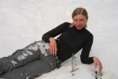
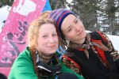
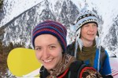
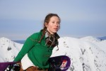
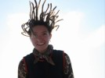
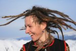
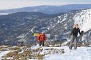
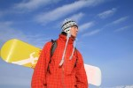
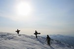
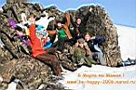
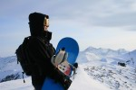
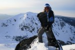
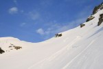
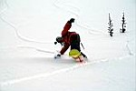
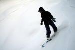
Все, накатались! Пора бы уже и нам отдыхать, а то все вокруг такие веселые по полянам сидят, а у нас еще печко не растоплена. Саша с Юлей аккуратно спустились по тропе с Трех Берез, а спичек-то и нету! Ну да это не беда, ща быстро все сделаем, и ужин праздничный сварим, и шампанское откупорим, и поздравим, и всего пожелаем, и стриптиз станцуем, и массаж сделаем, и чего мы там еще наобещали доверчивым подругам нашим, все сделаем :) :) :)
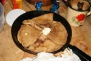
Воскресенье, 9 марта. Масленица! С утра нажарили блинчиков с маслом, с вишневым конфитюром их поели, эх, хорошо! На вечер запланировали костер, потом девушку в чистом поле разорвать на части в жертву богам, потом сжечь кого-нибудь на костре, тоже в жертву, короче говоря, специалисты по древнерусским языческим обрядам у нас имеются :) Ну это вечером, вечером...
Юля пробует покататься на сноуборде, вроде бы получается не только в снегу валяться, но и елки объезжать с зажмуренными глазами :)
Мы собираемся идти загорать в Южный цирк, несмотря на то, что какие-то непонятные облака налетели и затянули все небо. Но мы же не паримся особо по таким мелочам, взяли пару кариматов, надели топы и шорты, и разогнались на Мамай. На верхушке встретили Сигала с новосибирцами, они собирались раскатать центральный кулуар. А мы потропили по гребню на запад, там где-то можно безопасно спуститься в Южный. К нашей пятерке присоединилась еще одна пятерка, из которой я знал только Гришу и Женю. Ну это уже и не важно, главное, что все успешно спустились в цирк и что облака куда-то улетели нафик :)
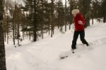
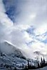
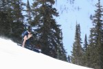
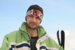
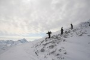
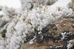
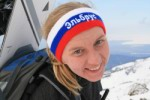
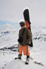
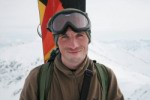
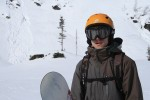
А по поводу такого солнечного денька было решено реализовать давнюю задумку, а именно - устроить Баунти в Южном цирке. Достали ништяки и термосы с чаем, морсом, кофе, открыли банку ананасов, расстелили кариматы и давай загорать и батонить! Потом нашли какие-никакие надувы-трамплины и начали с них прыгать, кто во что горазд. Фоток мало, потому что я сам прыгал, может у Гриши потом возьму, выложу... Еще было прикольно падать в снег голым торсом, вот только снег колючий и царапает кожу :) Вдоволь набесившись и назагаравшись, все вместе поехали дальше. Хотели по дороге найти парочку дропов и пофотать крутые полеты, но как-то разогнались по новому интересному рельефу, растянулись и оказались у ручья, от которого уже начинается мега-траверс.
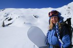
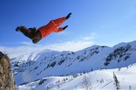
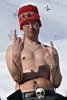
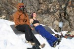
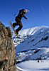
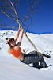
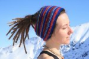
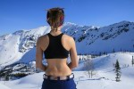
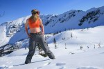
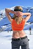
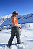
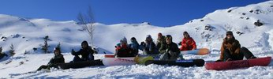
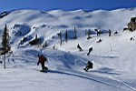
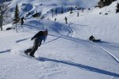
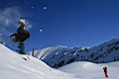
День длинный, солнце высоко. Я, Света и Космо подумали, что неплохо бы еще покататься. А Таня и Марина решили, что неплохо бы в гости сходить и пошли гулять. А мы пошли на Лесной в надежде катануть Веселый кулуар. Но по лавинным выносам идти было совсем не весело, и на последнем, который лежал на выкате с Лесного, мысли о вечном окончательно подорвали желание кататься на закате по снегу, который весь день грелся на солнышке... поехали обратно, несколько раз провалились по пояс, а снег тут же схватывается, жесть блин...
Девчонки сходили в гости более удачно, ребята из старой зимухи изголодались по женскому обществу и неплохо их угостили :) да так, что Таня не могла без смеха на Марину смотреть, а Марине и смотреть ни на кого не надо было :) Света сварила отличный супчик, наелись до отвала, отдохнули. Космо замутил костровую яму, развели большой костер и наконец-то посидели у жаркого огня. И как-то обломно было идти кого-то разрывать, сжигать, закапывать с бипером... Потом как-нибудь :) Сварили компот, потом чай. На другом берегу долго стреляли ракетницами, а мы им сначала кричали "Ууууууу!", а потом "Дастали ужееее!" :) Потом кто спать пошел, кто дальше у костра сидел, вместе с гостями из старой зимухи...
Понедельник, 10 марта. Выходной день. Проснулись пораньше, позавтракали, быстро собрались и на Мамай пошли, что-то опять в Северный захотелось. Только не всем, Марина и Таня решили поближе места найти, ну там Узкий кулуар не раскатаный, да и мало ли чего, можно и на кунге позагорать :) Блин, ну мы тоже назагарались, третий день солнце светит. Ладно, не беда. Поднялись на верх за два часа, отдохнули и поехали. В очередной раз без приключений спустились с гребня в цирк по новому для себя кулуару и погнали дальше знакомым маршрутом. В этот раз совсем отлично катанули, на одном дыхании, ровно и без остановок, с точным попаданием на Могул, где с прошлых выходных так никто и не катался. Это с учетом того, что практически все катальные места за три дня были раскатаны многочисленной тусовкой, мы все эти три дня находили нетронутые кулуары, можно даже сказать - поля непаханые :) Короче, каталово получилось продуктивное :) Всем спасибо! Отличные выходные!
То есть они еще не закончились, еще же по тропе выкатывать, а тропу же на снегоходе пингвины раскатали, так что тоже клево за полчаса до равнины спустились. Да и вообще, еще не вечер, хорошего много было :) Вот только аккумуляторы в двух фотиках одновременно сдулись, так что фотосессии будут в следующие выходные. В эти выхи и так фоток много получилось :)
Март 2008
Рассказ : Лёха Белокрылов
Фото : Лёха Белокрылов